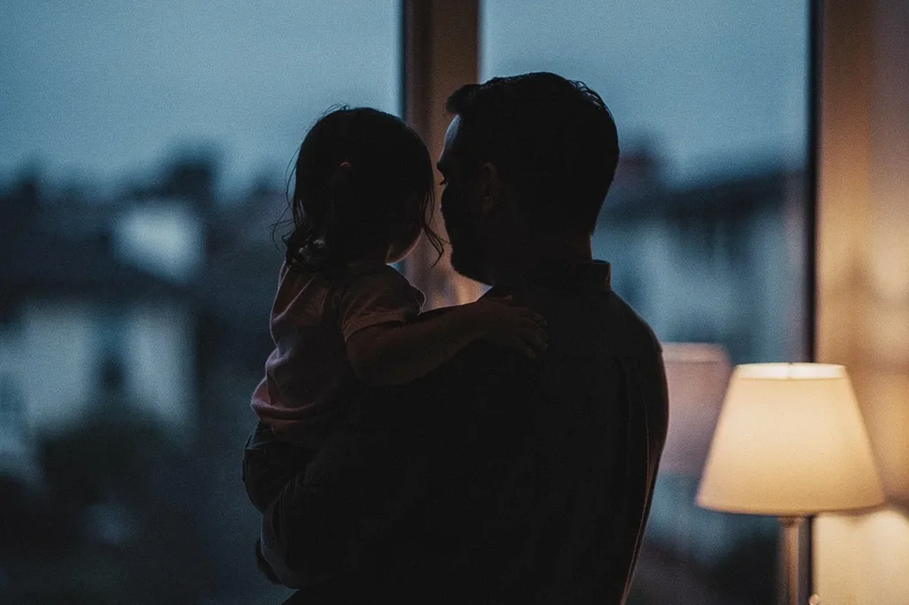
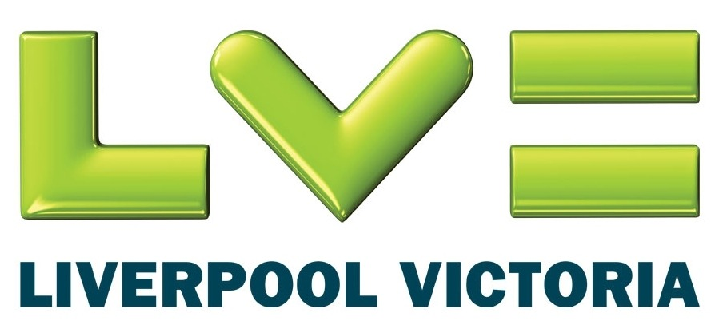
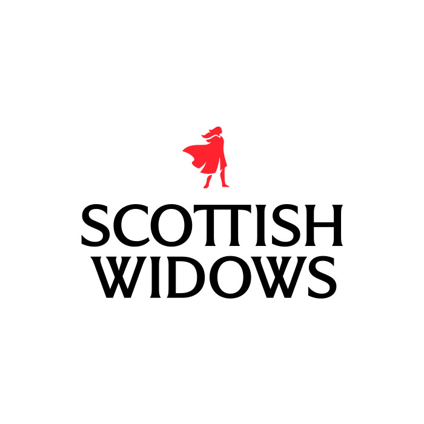

Life or Critical Illness Cover
A sporting career is short; the people who depend on you aren't. DCS Insure introduces and arranges life cover and critical illness cover so a serious diagnosis, or worse, doesn't leave your family exposed.
A lump sum when it matters most
Life cover pays a lump sum on death within the term chosen. Critical illness cover pays a lump sum on diagnosis of a condition specified in the policy, again within the term chosen. The two are often arranged together, and the right term and level depend on your circumstances — mortgage, family, contract length.
We introduce and arrange this cover; we don't advise on this website, and nothing here is a quotation or a recommendation.
- Life cover and critical illness cover, arranged separately or together.
- Term lengths matched to your circumstances, not a default number.
- Introduced through insurers on our panel — terms, exclusions and eligibility are theirs, not ours.

Most people set this up once and never think about it again. Fifteen minutes now.
On our panel for this cover


Free initial review
Fifteen minutes on the phone to talk through what you'd want this cover to do, and for how long.